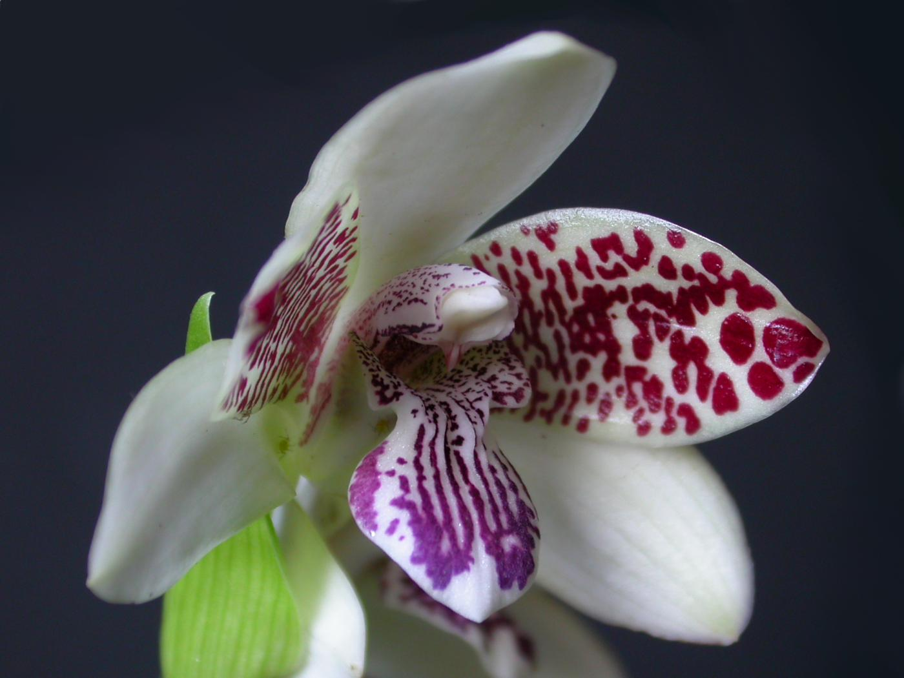

Orquídeas brasileiras são a diversificada e exuberante coleção de espécies nativas do Brasil, o quarto país com maior variedade de orquídeas no mundo. Essas plantas adaptam-se a diversos biomas, do Cerrado à Mata Atlântica, apresentando características como o crescimento em árvores (epífitas), folhas que armazenam água e adaptações à seca ou ao fogo. Exemplos populares incluem as Cattleyas, Oncidiums e a nutritiva Vanilla, embora a maioria das orquídeas comercializadas no Brasil seja de origem estrangeira.
